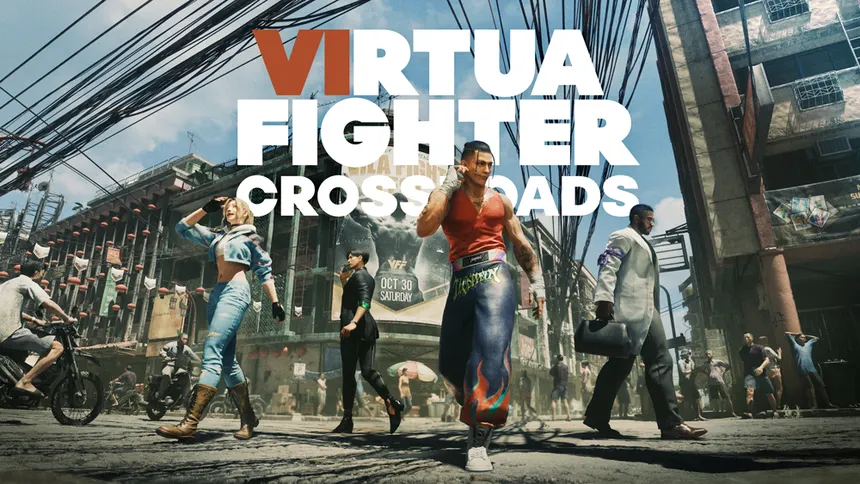
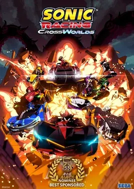
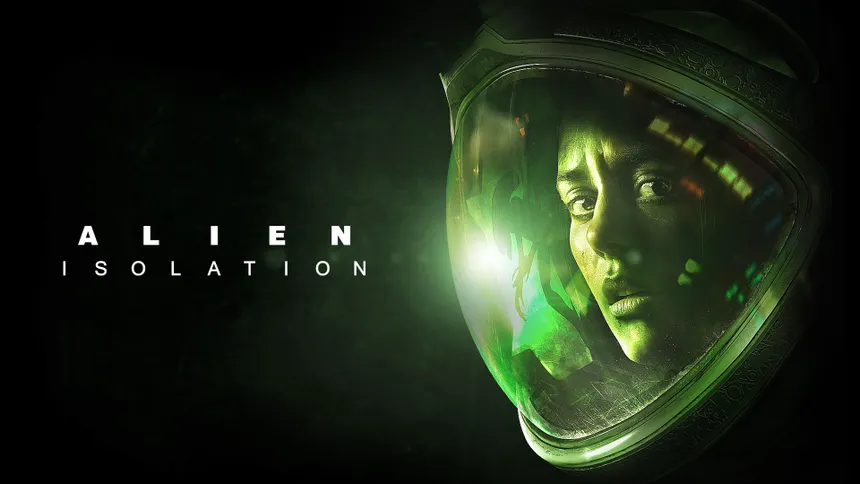

Nuevos Lanzamientos y Remakes de SEGA (2025-2026)
Los siguientes juegos de SEGA fueron programados para su lanzamiento en 2025 y 2026 , incluyendo remakes de clásicos y nuevas entregas de franquicias populares. ¡Prepárate para una experiencia de juego
Persona 4 Revival

Persona 4 Revival es un remake de Persona 4 Golden. El juego combina una historia de misterio con elementos de RPG, combates por turnos y la vida escolar de sus personajes. Esta nueva versión tiene gráficos mejorados, una interfaz renovada, nuevas escenas y mejoras en el sistema de combate. La historia gira alrededor de unos misteriosos sucesos relacionados con el Midnight Channel y un grupo de estudiantes que intenta descubrir la verdad.
Precio oficial: US$69.99 (edición estándar)
Virtua Fighter Crossroads

Virtua Fighter Crossroads es el nuevo juego principal de la saga Virtua Fighter y está previsto para 2027. Tendrá una campaña para un jugador con una historia más profunda, además de los combates cuerpo a cuerpo característicos de la serie. Las decisiones, victorias y derrotas del jugador influirán en el desarrollo de la historia, haciendo que los combates sean una parte importante de la aventura.
Precio oficial: Aún no anunciado por SEGA.
Sonic X Shadow Generations

Sonic X Shadow Generations reúne dos experiencias en un solo juego. Por un lado está Sonic Generations, con niveles clásicos y modernos de Sonic, y por otro está una nueva campaña protagonizada por Shadow. En su aventura, Shadow obtiene nuevas habilidades y se enfrenta a Black Doom mientras recorre diferentes lugares de su pasado. El juego también incluye secretos y desafíos para los jugadores.
Precio oficial: US$49.99 (edición estándar)
Sonic Racing: CrossWorlds

Sonic Racing: CrossWorlds es un juego de carreras de Sonic en el que los jugadores pueden competir usando personajes conocidos de la franquicia. Una de sus principales características son los CrossWorlds, que permiten cambiar de escenario durante las carreras y crear recorridos diferentes. También cuenta con partidas locales y carreras online de hasta 12 jugadores, además de una gran cantidad de vehículos, pistas y objetos.
Precio oficial: US$69.99 (edición estándar)
Alien Isolation 2

Alien: Isolation 2 es la continuación del juego de terror y supervivencia Alien: Isolation. La historia comienza cuando un equipo de investigación encuentra una nave estrellada en un planeta remoto, liberando nuevamente una amenaza alienígena. El jugador tendrá que explorar el lugar, buscar recursos y tratar de sobrevivir mientras es perseguido por una criatura peligrosa. El juego busca mantener la tensión y el estilo de terror de la primera entrega.
Precio oficial: Aún no anunciado por SEGA.